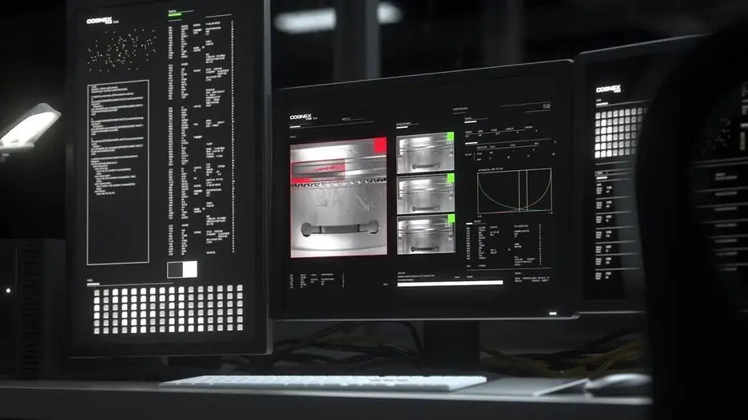

학습 기반 결함 분석
정상과 불량 샘플을 통해 스크래치, 오염, 찍힘처럼 형태가 다양한 이상을 구분합니다.
AI Vision Software
룰 기반 조건을 만들기 어려운 외관 불량, 분류, 위치 검출과 OCR을 학습 데이터로 해결하는 AI 이미지 분석 소프트웨어입니다.

01 · Overview
VisionPro Deep Learning은 정상 변동과 불량 편차가 복잡해 고정된 임계값으로 설명하기 어려운 검사를 위해 사용합니다. 단순히 AI 모델을 학습하는 데 그치지 않고, 촬영 조건 표준화, 데이터 수집과 라벨링, 검증 기준, 런타임 프로그램과 설비 판정 흐름까지 함께 설계해야 안정적인 현장 적용이 가능합니다.
자동차 표면, 배터리, 전자부품, 식품·포장, 섬유와 인쇄처럼 불량 모양이 일정하지 않거나 문자 상태가 다양한 공정에 적용합니다.
02 · Key Features
정상과 불량 샘플을 통해 스크래치, 오염, 찍힘처럼 형태가 다양한 이상을 구분합니다.
검사 목적에 따라 객체 위치, 이미지 분류, 문자 판독과 결함 영역 분석을 조합합니다.
학습 모델을 기존 검사 로직, 사용자 UI와 설비 통신 흐름 안에 배치할 수 있습니다.
03 · Application Fit
결함의 위치와 크기가 일정하지 않아 룰 기반 조건이 지나치게 복잡해지는 검사입니다.
모양과 배경 편차가 있는 제품을 종류 또는 상태별로 분류하는 공정입니다.
변형, 저대비, 각인 편차가 큰 문자를 학습 기반으로 판독해야 하는 경우입니다.
04 · Specification Guide
제품 선정에 앞서 아래 항목을 기준으로 검사 조건과 옵션을 확인합니다.
PC 기반 산업용 AI 이미지 분석 소프트웨어
위치, OCR, 결함 분석, 분류용 학습 도구와 런타임
데이터 품질, 불량 정의, 학습·검증 수량, 처리 환경, 운영 방식
적용 모델 및 옵션에 따라 상이합니다. 해상도, 렌즈, 조명, 통신과 세부 사양은 검사 대상 및 설치 조건을 확인한 뒤 문의 바랍니다.
05 · Inspection Tasks
06 · ASPEC Engineering
단품 공급만이 아니라 실제 생산라인에서 안정적으로 작동하도록 광학계, 제어와 소프트웨어를 함께 구성합니다.
07 · References & Related Products
ASPEC의 AI·OCR·바코드·정렬 검사 사례에서 검사 방식과 시스템 구성 방향을 확인할 수 있습니다. 공개 사례는 특정 제품 모델 사용을 의미하지 않으며 실제 모델은 현장 조건에 따라 선정합니다. 구축사례 라이브러리 보기
08 · FAQ
필요 수량은 불량 다양성, 정상 편차와 목표 정확도에 따라 달라집니다. 먼저 대표 샘플을 분석해 데이터 수집 계획과 검증 세트를 정합니다.
검사 유형과 도구 선택에 따라 정상 변동을 학습해 이상을 찾는 방식도 검토할 수 있습니다. 실제 불량 정의와 오검 요구 수준을 함께 판단합니다.
조명, 카메라 위치와 제품 조건이 바뀌면 데이터 분포도 달라집니다. 변경 이미지를 수집해 성능을 재검증하고 필요한 경우 추가 학습합니다.
09 · Project Inquiry
검사 대상, FOV, WD, 택타임, 불량 유형을 알려주시면 카메라·렌즈·조명과 시스템 구성을 함께 검토해드립니다.